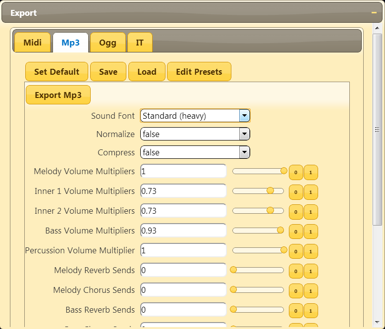
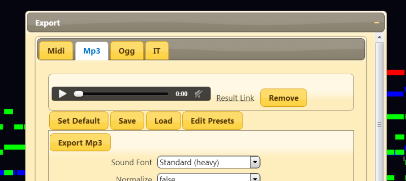
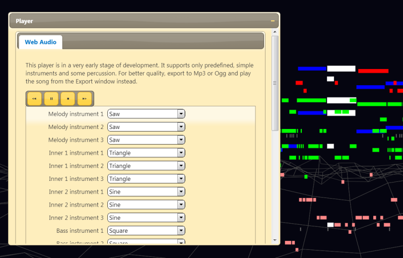
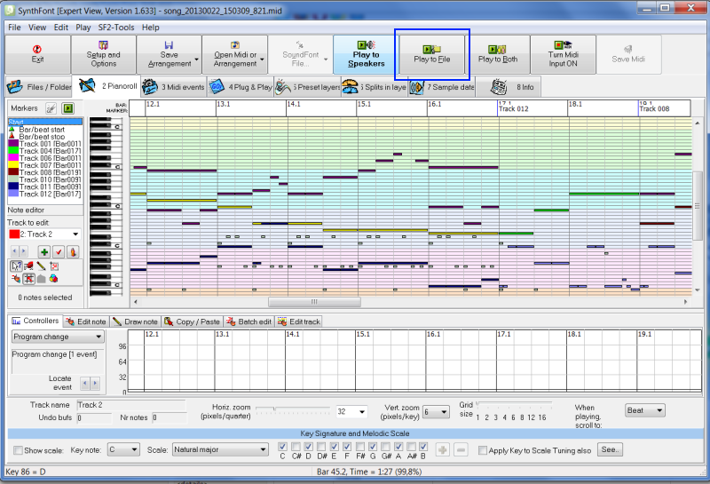

Render and Play Songs Tutorial
When using Abundant Music, you have a lot of options for playing and rendering songs. The server is able to export to Midi, Mp3 and Ogg files using a couple of different soundfonts. The client can also play songs if your browser supports web audio. You can also export a Midi file and then render it to Mp3/Ogg with another program that for example supports VST instruments.
To make any of these options available, you need to log in first through the "Account" window.
Export Mp3/Ogg/Midi
First, open the "Export" window and select the tab you want. For example, if you want to render an Mp3, select the "Mp3" tab.
Press "Export Mp3" (or whatever you chose for file type) and wait until you see a small player and a "Result Link" show up. With the link, you can access the file directly and save it on your computer. With the player, you can play the music and at the same time see what notes are played in the background.
The server only saves the exported files for 20 minutes, so if you want to keep a particular render, make sure that you save it on your own computer with the "Result Link". In many browsers, it is just a matter of right clicking on the link and then select "Save Link Target" or something similar.
If you are not happy with the mixing, you can modify the sliders for volume, reverb and chorus.
Not every browser supports the Mp3 and Ogg formats. If you can't hear anything when pressing the play button, try another format instead.
When exporting a Midi file, there is currently no player that shows up. This might change in the future when Midi is supported by the browsers.
Web Audio Player
The web audio player is only available in browsers that has implemented the web audio standard. Currently, it is only Chrome that has done so, but Firefox is probably going to support it soon as well.
The web audio player has a couple of options for selecting simple instruments for playback for the different parts and adjusting volume.
External Programs
If you first export a Midi file and save it on your computer, you can use an external program, such as SynthFont, LMMS, Ardour and many other to render an Mp3/Ogg/Wav or whatever the program supports.
The following is a screenshot from SynthFont where you can render a Wav file by pressing the "Play to File" button:
You can do a lot more with SynthFont, like using custom soundfonts, VST instruments, edit/inspect the Midi data etc.